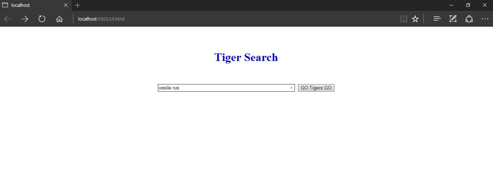
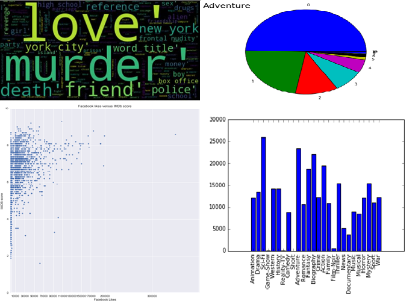
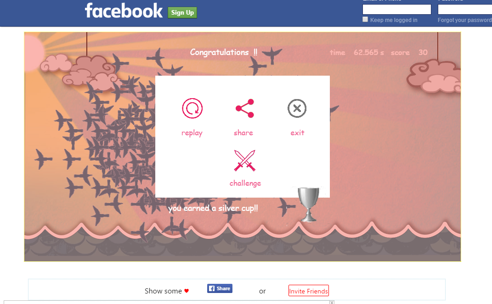
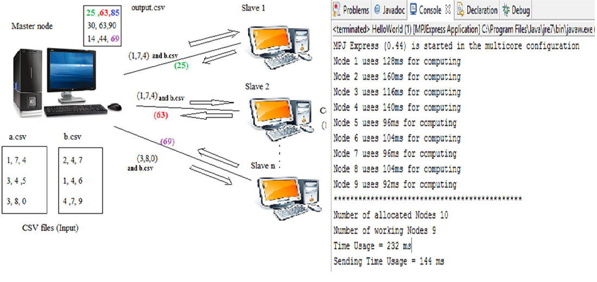
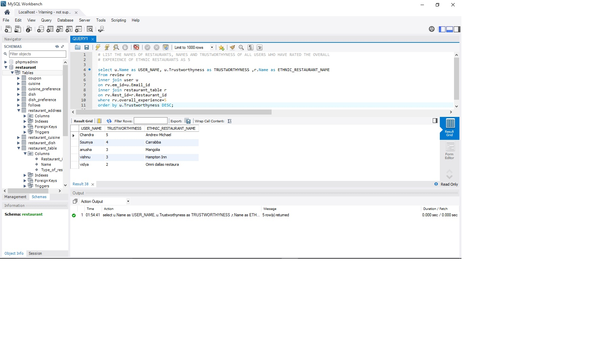
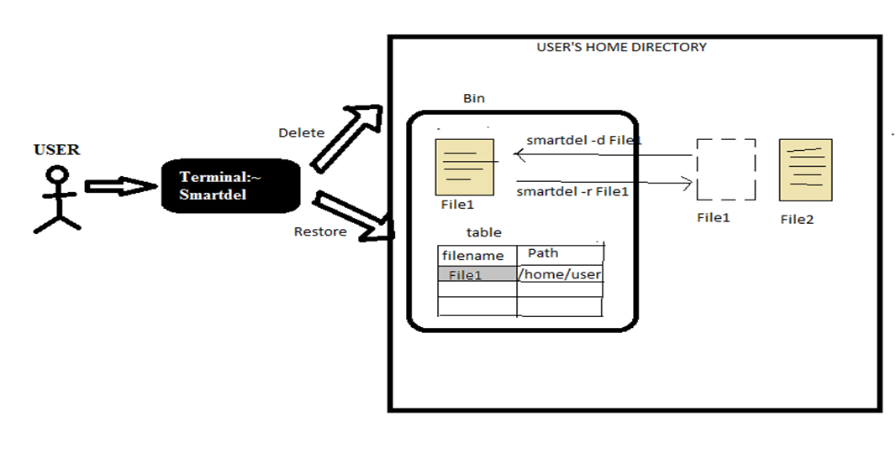
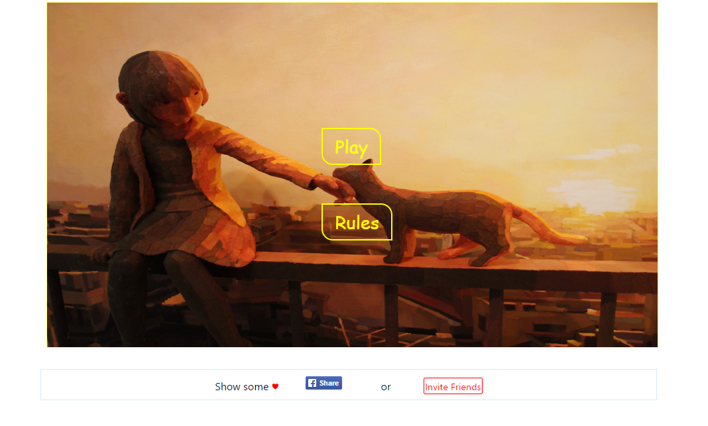
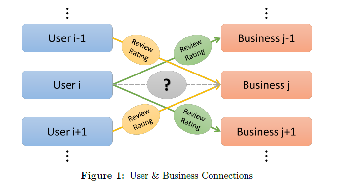

Soumya Medapati
University Of Memphis
soumyamedapati1@gmail.com
Projects
TigerSearch


A perl based web search engine designed for University of Memphis Domain
Analysis of IMDB dataset

This project visualizes the imdb dataset using python to predict the receipe of a good movie. It analyzes various aspects of the data set such as facebook likes, country of origin, directors, genre and determines the factors which affect the success of movie.
Lost in migration

A simple and fun facebook game which tests our attention levels and helps improve our presence of mind
Distributed Matrix Multiplication

This project uses client server distributed architecture to perform multiplication of 10,000*10,000 dimension matrices. I have used amazon web services to create server and clients. Each row column multiplication is performed by one slave and results are collected by the master server.
Restaurant Recommendation system

The main objective of this project was to design and implement a restaurant recomendation system. Its design phase proceeded through various steps such as designing ER diagrams, mapping them to relational tables, normalizing the tables
into 3NF form, creating the schema, establishing its connection with back-end and building SQL queries to retrieve essential information. HTML5, CSS3 and JavaScript was used for the front-end along with MySQL back-end.
Smart delete

This is a unix script to delete and restore a file, multiple files, or files having wildcard character in their names. It creates a smart recycle bin for the purpose of storing file path of deleted file.
Girl and math

a simple javascript game which improves your flair in numbers and decision making :)
Prediction of Yelp Star Review Rating

A predictive model based on user-user collaborative Filtering Algorithm implemented in python